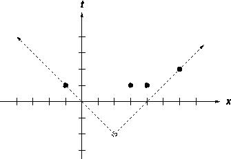

Home Page
F.A.Qs
Statistical Charts
Past Contests
Scheduled Contests
Award Contest
| Online Judge | Problem Set | Authors | Online Contests | User | ||||||
|---|---|---|---|---|---|---|---|---|---|---|
| Web Board Home Page F.A.Qs Statistical Charts | Current Contest Past Contests Scheduled Contests Award Contest | |||||||||
|
Language: Advanced Causal Measurements (ACM)
Description Causality is a very important concept in theoretical physics. The basic elements in a discussion of causality are events. An event e is described by its time of occurrence t, and its location, x, and we write e = (t,x). For our concerns, all events happen in the one dimensional geometric space and thus locations are given by a single real number x as a coordinate on x-axis. Usually, theoretical physicists like to define the speed of light to be 1, so that time and space have the same units (actual physical units frighten and confuse theorists).
One event e1 = (t1,x1) is a possible cause for a second event e2 = (t2,x2) if a signal emitted at e1 could arrive at e2. Signals can't travel faster than the speed of light, so this condition can be stated as: Thus an event at (-1,1) could cause events at (0,0), (1,2), and (1,3), for example, but could not have caused events at (1,4) or (-2,1). Note that one event can cause several others.  Recently, scientists have observed several unusual events in the geometrically one dimensional universe, and using current theories, they know how many causes were responsible for these observations, but they know nothing about the time and space coordinates of the causes. You asked to write a program to determine the latest time at which the earliest cause could have occurred (i.e. the time such that at least one cause must have occurred on or before this time). Somewhat surprisingly, all the observed events have both space and time coordinates expressed by integer numbers in the range -1000000 <= t, x <= 1000000. The figure on the right illustrates the first case from input: the earliest single event as a possible cause of all four events. Input The first line of input is the number of cases which follow. Each case begins with a line containing the number n of events and the number m of causes, 1 <= n, m <= 100000. Next follows n lines containing the t and x coordinates for each event. Output Output consists of a single line for each case in the format as in the sample output, giving the latest time at which the earliest cause could have occurred, this will be an integer as our time units are not divisible.
Sample Input 4 4 1 1 -1 1 3 1 4 2 6 4 2 1 -1 1 3 1 4 2 6 4 3 1 -1 1 3 1 4 2 6 4 4 1 -1 1 3 1 4 2 6 Sample Output Case 1: -2 Case 2: 0 Case 3: 0 Case 4: 1 Source |
[Submit] [Go Back] [Status] [Discuss]
All Rights Reserved 2003-2013 Ying Fuchen,Xu Pengcheng,Xie Di
Any problem, Please Contact Administrator